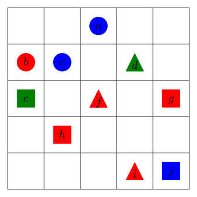

On a vu qu’un énoncé comme “x>0” n’est pas une proposition puisqu’il ne possède pas de valeur de vérité claire. Si \(x=-1\text{,}\) l’énoncé devient une proposition fausse, alors que si \(x=2\text{,}\) il devient une proposition vraie. Bien que certains énoncés avec variables peuvent sembler vrais peu importe la valeur de la variable, on préfèrera ne pas les considérer comme des propositions. Un exemple d’un tel énoncé serait \(x^2\geq 0\text{.}\) Comme fonction réelle, il est vrai qu’un nombre au carré est toujours positif. Il existe toutefois d’autre contexte où cette équation ne serait plus nécessairement vraie. 1
Pour remédier à cela, on doit préciser ce que signifie les variables. On dira alors qu’on les quantifie.
Dans cette section, on définit le quantificateur existensiel et le quantificateur universel. On explique aussi comme obtenir la négation d’une proposition quantifiée.
Sous-section2.3.1Prédicats
Un énoncé qui contient une ou des variables est appelé un prédicat. Ce n’est pas une proposition, car la valeur de vérité dépendra de la valeurs des variables. On spécifie normalement un ensemble univers \(\Omega\) qui consiste aux diverses possibilités que peuvent prendre les variables. Pour des valeurs spécifiques des variables, le prédicat devient une proposition.
Exemple2.3.1.Des prédicats.
On considère l’ensemble des nombres réels comme ensemble univers et les prédicats suivants:
\(P_1(x): x>4\text{;}\)
\(P_2(x,y): x\leq y\text{;}\)
\(P_3(x,y): x+y=2\text{.}\)
On cherche à évaluer la valeur de vérité des propositions obtenues lorsque \(x=1,y=3\text{.}\)
Solution.
Lorsque \(x=1\text{,}\) la proposition \(P_1(1)\) est \(1>4\text{,}\) qui est fausse.
La proposition \(P_2(1,3)\) est \(1\leq 3\text{,}\) qui est vraie.
Puisque \(1+3=4\text{,}\) la proposition \(P_3(1,3)\) est fausse.
L’ensemble de toutes les valeurs de \(\Omega\) qui rendent un prédicat \(P\) vrai est appelé l’ensemble de vérité de \(P\text{.}\) On le note
\begin{equation*}
V(P)=\{x\in \Omega~|~ P(x) \text{ est vrai}\}\text{.}
\end{equation*}
Exemple2.3.2.Des ensembles de vérité.
On considère le prédicat “\(l\) est une voyelle”. On cherche les ensembles de vérité de ce prédicat lorsque l’ensemble univers est
\(\Omega_1\text{,}\) l’alphabet usuel;
\(\Omega_2\text{,}\) les lettres composant le prénom de l’auteur.
Solution.
L’ensemble des lettres de l’alphabet usuel qui sont des voyelles et donc, qui rendent le prédicat vrai sont \(\{a,e,i,o,u,y\}\text{.}\)
Parmi les lettres qui composent “Jean-Sébastien”, on retrouve les voyelles \(\{a,e,i\}\text{.}\)
Sous-section2.3.2Quantificateurs existentiel et universel
On peut donc transformer un prédicat en proposition en assignant aux variables certaines valeurs. On peut aussi ajouter un quantificateur à un prédicat. Un quantificateur est un mot du genre “certains, quelques, toutes, \etc” qui vient parler, d’une manière plus ou moins précise, de combien de valeurs de la variable on s’intéresse. Ainsi si on dit, “pour certaines valeurs de \(x\in \R\) on a \(x>4\)”,on obtient une proposition. Dans ce cas-ci, elle est vraie, mais si on avait dit “pour toutes les valeurs de \(x\in \R\text{,}\) on a \(x>4\)”, on aurait obtenu une proposition fausse.
En mathématiques, il y a deux principaux quantificateurs qui sont utilisés. Le quantificateur existentiel et le quantificateur universel. Le premier s’intéresse à l’existence d’une valeur des variables qui rendent le prédicat vrai. Il n’est même pas nécessaire de la trouver cette valeur, et il pourrait y en avoir plus d’une. L’important, c’est qu’elle existe. Le quantificateur universel lui veut que le prédicat soit vrai pour toutes les valeurs de l’ensemble univers.
Définition2.3.3.Quantificateur existentiel.
Soit \(P(x)\) un prédicat et \(\Omega\) l’ensemble univers de la variable \(x\text{.}\) Une proposition existentielle est un énoncé de la forme “il existe \(x\in \Omega\) tel que \(P(x)\) est vrai”. D’un point de vue symbolique, on la dénote \(\exists x\in \Omega \, P(x)\) (le symbole \(\exists\) se lit “il existe”). La proposition est vraie s’il existe au moins une valeur dans \(\Omega\) qui rende \(P(x)\) vrai et est fausse si toutes les valeurs de \(\Omega\) font que \(P(x)\) est faux.
Au lieu de “il existe”, on dit parfois aussi “pour un certain”,“on peut trouver”,“pour au moins”, etc.
Avec une proposition contenant un quantificateur existentiel, on obtient la valeur de vérité “vraie” dès qu’ (au moins) une valeur de \(\Omega\) rende le prédicat vrai. Pour que la proposition soit fausse, il faut toutefois vérifier que le prédicat est faux pour toutes les valeurs dans \(\Omega\text{,}\) ou du moins argumenter cela.
Exemple2.3.4.Des propositions avec quantificateur existentiel.
On considère les propositions suivantes:
\(\displaystyle \exists n\in \N\, n^2=n+2 \)
\(\exists a \in \Omega, \) où \(\Omega=\{u,v,w,x,y,z\}\text{.}\)
Il y a un mammifère qui pond des oeufs.
Il existe un moment précis où l’auteur mesurait \(100 \) cm. (Présentement, il en fait environ \(170\text{.}\))
On cherche la valeur de vérité de ces propositions.
Solution.
On peut essayer de trouver un exemple qui fonctionne. Rapidement, on voit que \(n=2\) est une solution. La proposition est donc vraie.
Puisque Jean-Sébastien ne contient aucune des lettres u,v,w,x,y et z, la proposition est fausse.
Il y a en fait deux types de mammifères qui pondent des oeufs. L’ornithorynque est probablement l’exemple le plus connu, mais il y a aussi les échidnés.
Ceci constitue un bon exemple de l’existence d’une valeur, sans toutefois pouvoir la déterminer. Comme la croissance d’une personne est un processus continu et qu’un humain nait normalement entre 46 et 56 cm (le record étant de 71!), il existe bel et bien un moment où l’auteur mesurait 100 cm. Bien malin toutefois celui qui pourra dire quand cela s’est produit.
Alors que le quantificateur existentiel souhaite l’existence d’une valeur rendant le prédicat vrai, le quantificateur universel lui veut que le prédicat soit vrai pour toutes les valeurs de l’univers considéré.
Définition2.3.5.Quantificateur universel.
Soit \(P(x)\) un prédicat et \(\Omega\) l’ensemble univers de la variable \(x\text{.}\) Une proposition universelle est un énoncé de la forme “pour tout \(x\in \Omega\) on a que \(P(x)\) est vrai”. D’un point de vue symbolique, on la dénote \(\forall x\in\Omega \, P(x)\) (le symbole \(\forall\) se lit “pour tout”). La proposition est vraie si chaque valeur de \(x\) dans \(\Omega\) rend \(P(x)\) vrai et est fausse dès qu’une valeur de \(x\) font que \(P(x)\) est faux.
Au lieu de “pour tout”, on dit parfois aussi “pour chaque”,“pour n’importe quel”,etc.
Avec une proposition contenant un quantificateur universel, il faut vérifier (ou argumenter pour) toutes les valeurs de \(\Omega\) pour que la proposition soit vraie. Pour qu’elle soit fausse, il suffit d’exhiber une valeur de \(x\) pour laquelle \(P(x)\) est faux.
Exemple2.3.6.Des propositions avec quantificateur universel.
On considère les propositions suivantes:
\(\displaystyle \forall n\in \N\, n^2=n+2 \)
\(\forall a \in \Omega, \) où \(\Omega=\{\text{a,b,s,t}\}\text{.}\)
Tous les oiseaux peuvent voler.
N’importe quel nombre naturel est pair ou impair.
On cherche la valeur de vérité de ces propositions.
Solution.
Il suffit de tester pour certaines valeurs de \(\N\text{,}\) comme \(n=1\) pour se rendre compte que la proposition est fausse.
Le prénom de l’auteur étant Jean-Sébastien, on vérifie aisément que a,b,s,t en font tous partie.
La proposition est fausse, les autruches étant un exemple d’oiseaux ne pouvant pas voler.
La proposition est vraie, la parité d’un nombre créant une dichotomie des nombres naturels. On aura les outils nécessaire pour formaliser ceci prochainement.
Une proposition universelle est souvent présentée à l’aide d’une implication. On retrouve donc fréquemment, pour des prédicats \(P\) et \(Q\text{,}\) la forme
En langage courant, cela signifie que pour tout \(x\) dans l’ensemble univers, avoir la propriété \(P(x)\) implique aussi avoir la propriété \(Q(x)\text{.}\)
Par exemple, on pourrait dire \(\forall x\in \R\text{,}\) si \(x>2\) alors \(x^2>4\text{.}\) Ceci n’est pas très surprenant comme propriété. Cette proposition apporte toutefois une vision intéressante sur la table de vérité de l’implication, en particulier, pourquoi les ligne \(F\)-\(V\) et \(F\)-\(F\) sont vraies.
Si dans son ensemble la proposition “\(\forall x\in \R\text{,}\) si \(x>2\) alors \(x^2>4\)” est vraie, alors selon la définition du quantificateur universel, il faut que “si \(x>2\) alors \(x^2>4\)” soit vraie pour toutes les valeurs de \(x\text{.}\) En particulier, il faut que
\(-3>2\rightarrow (-3)^2>4\) soit vraie (ce qui correspond à \(F\)-\(V\))
et que \(1>2\rightarrow 1^2>4\) soit vraie (ce qui correspond à \(F\)-\(F\)).
Il existe bien entendu plusieurs manières équivalentes d’écrire des propositions. Par exemple, “si \(\Omega\) est l’ensemble des polygones, \(\forall x\in \Omega\text{,}\) si \(x\) est un carré alors \(x\) est un rectangle” pourrait être écrite de manière équivalente comme “\(\forall x\) carré, \(x\) est un rectangle.”
\begin{equation*}
\forall x \in V(P)\, Q(x)\text{,}
\end{equation*}
où \(V(P)\) est l’ensemble de vérité de prédicat \(P(x)\text{.}\)
D’un point de vue pratique, et dans le but d’alléger l’écriture, on omet parfois l’écriture des quantificateurs universels. Ainsi, la proposition \(x>2\rightarrow x^2>4\) doit être comprise comme la proposition quantifiée \(\forall x\in \R \,x>2\rightarrow x^2>4 \text{.}\) On décide de garder l’écriture complète avec le quantificateur dans ce chapitre, mais il est possible qu’à l’occasion on le laisse tomber aussi au profit d’une écriture plus concise. Dans un souci de disctinction, on introduit la notation suivante:
Sous-section2.3.3Négation et combinaisons de quantificateurs
On s’intéresse maintenant à la négation d’une proposition quantifiée. On reprend la proposition \(p=\)“il y a un mammifère qui pond des oeufs”. Quelle est sa négation? À première vue, on pourrait penser que c’est “il y a un mammifère qui ne pond pas d’oeufs”, mais ce n’est pas tout à fait cela. Si on veut inverser la valeur de vérité de \(p\text{,}\) et donc dire “il est faux de dire qu’il y a un mammifère qui pond des oeufs”,il faudrait que tous les mammifères ne pondent pas d’oeufs.
De même, pour nier la proposition \(q=\)“tous les oiseaux peuvent voler”, on cherche à exprimer “il est faux de dire que tous les oiseaux peuvent voler”. Intuitivement, on comprend donc que c’est équivalent à dire qu’il existe un oiseau qui ne peut pas voler. Ainsi,
On répète ici qu’après analyse, cela ne devrait pas trop surprendre. S’il n’y a pas un objet avec une propriété, alors tous les objets n’ont pas la propriétés. De même, si ce n’est pas tous les objects qui ont une propriétés, alors il existe (au moins) un objet qui n’a pas la propriété. Le symbolisme en apparence complexe ne doit pas distraire du caractère simple de la chose.
Exemple2.3.7.Négation de propositions quantifiées.
On considère les propositions suivantes:
\(\displaystyle \forall n\in \N\, n^2=n+2 \)
\(\exists a\, \in \Omega, a \text{ est dans le prénom de l'auteur}\) où \(\Omega=\{u,v,w,x,y,z\}\text{.}\)
N’importe quel nombre naturel est pair ou impair.
Il existe un moment précis où l’auteur mesurait \(100 \) cm.
On peut nier cette proposition en écrivant \(\forall a\in \Omega,\neg (a \text{ est dans le prénom de l'auteur})\text{,}\) qui devient \(\forall a\in \Omega,a \text{ n'est pas dans le prénom de l'auteur}\text{.}\)
Cette proposition est équivalente à \(\forall n\in\N\, n\text{ est pair ou impair}\text{.}\) Sa négation devient donc une proposition avec un quantificateur existentiel qui a la forme \(\exists n\in \N \, n\text{ est n'est pas pair et } n\text{ n'est pas impair}\text{.}\) On aurait aussi pu écrire plus simplement le prédicat comme \(n\) est ni pair ni impair. Le “et” fait toutefois ressortir la loi de De Morgann dans la négation du “ou”.
Pour nier cette proposition, on pourrait dire qu’à tout moment de sa vie, l’auteur n’a jamais mesuré \(100\) cm.
Il est également possible d’utiliser plus d’un quantificateur avec un prédicat. La forme symbolique mathématique prend alors toute son importance. Par exemple, on imagine la proposition suivante “il existe un gardien pour tous les animaux du zoo”. Qu’est-ce que cela signifie? Est-ce
il y a un seul gardien qui s’occupe de tous les animaux du zoo;
ou bien chaque animal du zoo a son propre gardien.
On réécrit ces deux possibilités en langage symbolique:
\begin{equation*}
\exists g \,\forall a \,G(a)=g
\end{equation*}
signifie qu’il existe un unique gardien qui est le gardien de tous les animaux alors que
\begin{equation*}
\forall a \,\exists g \, G(a)=g
\end{equation*}
signifie que chaque animal possède son gardien. On note toutefois que cela n’empêche pas que deux animaux aient le même gardien.
Pour cet exemple particulier, ce n’est pas trop grave si on interpète incorrectement la phrase “il existe un gardien pour tous les animaux du zoo”. Par contre en informatique, dans un contexte de programmation, il est primordial de bien interpréter ce qui est demandé afin que l’ordinateur puisse appliquer ce que l’utilisateur veut.
On imagine un prédicat en deux variables \(P(x,y)\text{.}\) La proposition \(\forall x\,\exists y P(x,y)\) peut s’interpréter de la manière suivante. On imagine quelqu’un qui choisit un \(x\text{.}\) Il faut ensuite trouver un \(y\) tel que \(P(x,y)\) est vrai. Le choix de \(y\) risque de dépendre du \(x\) qui est choisi.
Par contre dans la proposition \(\exists x\,\forall y P(x,y)\text{,}\) c’est le \(x\text{,}\) s’il existe, qui dépendra des \(y\text{.}\) On doit trouver un \(x\) qui fonctionnera peu importe le \(y\) que quelqu’un choisirait
Exemple2.3.8.Des quantificateurs juxtaposés.
On considère la grille ci-dessous ainsi que les propositions suivantes:
Il existe un triangle \(t\) tel que pour tout cercle \(c\text{,}\)\(t\) est à la droite de \(c\text{.}\)
Il existe un cercle \(r\) pour lequel il existe un triangle de la même couleur.
Pour tout triangle \(t\text{,}\) il existe un carré \(c\) tel que \(t\) et \(r\) sont de la même couleur.
Pour tout triangle \(t\text{,}\) tous les carrés se retrouvent à une ligne inférieure à \(t\text{.}\)

Figure2.3.9.Une grille avec des figures
On cherche la valeur de vérité de ces propositions.
Solution1.
Pour cette proposition, il suffit de trouver un triangle pour lequel tout cercle, le triangle sera à la droite du cercle. En regardant la figure 2.3.9, on constate que les triangles \(d\) et \(i\) satisfont cette propriété. En effet, les trois cercles \(a,b,c\) sont tous à la gauche de ces triangles. On peut donc dire que \(d\) et \(i\) sont à la droite de tous les cercles. Ainsi, la proposition est vraie.
Solution2.
Pour cette proposition, on cherche un cercle et un triangle de la même couleur. Aucun triangle n’est bleu, ce qui élimine les triangles \(a,c\text{.}\) Par contre, le cercle \(b\) et le triangle \(f\) (ou \(i\)) sont rouges. La proposition est donc vraie.
Solution3.
Cette fois-ci, il n’est pas suffisant de trouver deux formes de la même couleur. Il faut s’assurer que pour chaque triangle, il existe un carré ayant la même couleur. On identifie trois triangles, soit \(d,f\) et \(i\text{.}\) Le triangle \(d\) est vert. On vérifie sur la figure 2.3.9 que le carré \(e\) est aussi vert. Le triangle \(f\) est rouge, tout comme le triangle \(i\text{.}\) Dans les deux cas, le carré \(g\) ou le carré \(h\) sont aussi rouges. La propriété est donc vraie.
Solution4.
On doit vérifier la condition pour chaque triangle. Pour le triangle \(d\text{,}\) il est vrai de dire que tous les carrés sont sur une ligne inférieure, comme on peut le voir sur la figure 2.3.9. Par contre il y a des carrés sur la même ligne que le triangle \(f\) (les carrés \(e,g\)) et des carrés sur des lignes supérieures au triangle \(i\)(toujours les carrés \(e,g\)). Pour ces raisons, la proposition est fausse.
Comment se comportent les propositions formées de plus d’un quantificateur lorsqu’on considère leur négation? À l’aide des règles établies plus haut et en procédant en étape, on peut arriver à trouver la négation d’une telle proposition. On donne deux exemples de propositions formées de deux quantificateurs. D’autres se trouvent dans les exercices.
Dans un premier temps, on considère la proposition
\begin{equation*}
\exists x \, \forall y \, P(x,y)\text{.}
\end{equation*}
On pose \(Q(x,y)\) la proposition \(\forall y P(x,y)\text{.}\) La proposition originale s’écrit donc comme \(\exists x \, Q(x,y)\text{.}\) Selon la négation d’une proposition quantifiée par un quantificateur existentiel, on a \(\neg(\exists x \, Q(x,y))\equiv \forall x \,\neg Q(x,y)\text{.}\) On peut ensuite calculer la négation de \(Q(x,y)\) en utilisant la règle pour la négation d’une proposition quantifiée par un quantificateur universel. On obtient \(\neg Q(x,y)=\neg(\forall y P(x,y))=\exists y \neg P(x,y)\text{.}\) Ainsi,
\begin{equation*}
\neg (\exists x \, \forall y \, P(x,y))\equiv \forall x\, \exists y\, \neg P(x,y)\text{.}
\end{equation*}
On regarde maintenant la proposition
\begin{equation*}
\forall x \forall y\, P(x,y)\text{.}
\end{equation*}
La notion de prédicat, à distinguer d’une proposition.
Le quantificateur existentiel et son symbole \(\exists\text{.}\)
Le quantificateur universel et son symbole \(\forall\text{.}\)
Les notations raccourcies \(\Rightarrow\) et \(\Leftrightarrow\text{.}\)
La négation d’une proposition quantifiée par un quantificateur existentiel est une proposition quantifiée par un quantificateur universel suivi de la négation du prédicat.
La négation d’une proposition quantifiée par un quantificateur universel est une proposition quantifiée par un quantificateur existentiel suivi de la négation du prédicat.
L’importance de l’ordre des quantificateurs lorsque plus d’un quantificateur de type différent sont présents.
Questions de compréhension de la lecture2.3.4Questions de compréhension de la lecture
Ces questions sont à faire avant de venir en classe et à remettre au début du cours.
1.
Soit \(P(x)\) le prédicat “\(x>2\)”. Déterminer si les propositions suivantes sont vraie, fausse ou indéterminée.
(a)
\(\exists x\in \R \,P(x)\text{;}\)
(b)
\(\exists x\in (-\infty,0) \,P(x)\text{;}\)
(c)
\(\exists x\in \R \,\neg P(x)\text{;}\)
(d)
\(\exists x\in (-\infty,0) \,\neg P(x)\text{;}\)
(e)
\(\forall x\in \R \,P(x)\text{;}\)
(f)
\(\forall x\in (-\infty,0) \,P(x)\text{;}\)
(g)
\(\forall x\in \R \,\neg P(x)\text{;}\)
(h)
\(\forall x\in (-\infty,0) \,\neg P(x)\text{;}\)
2.
Dans une ferme, on retrouve les animaux suivants: un chien blanc et noir ainsi qu’un chien brun, treize vaches de couleur blanche et noire, seize moutons blancs, quatre chats noirs, trente-trois poules brunes.
On considère les éléments de notation suivants:
\(d,v,m,c,p\) respectivement pour chien,vache,mouton,chat et poule.
\(BN,Br,B,N,J,G\) respectivement pour possède la couleur blanc et noir, brun, blanc, noir, jaune et enfin gris, et plus généralement \(C\) pour une allusion à la couleur quelconque.
\(M,O\) respectivement pour est un mammifère ou un oiseau.
\(P\) pour le nombre d’animaux est premier
\(F=\{d,v,m,c,p\}\) l’ensemble des espèces animales de cette ferme.
La proposition \(\exists a\in F\, c(a)\wedge Br(a)\) peut être interprétée comme “il existe un chat brun”. Identifier les prédicats et transcrire en symbolique les propositions suivantes.
(a)
Il y a une animal jaune à cette ferme.
(b)
Tous les animaux de la ferme sont des mammifères ou des oiseaux.
(c)
Pour tout animal de la ferme, avoir du blanc signifie aussi avoir du noir.
(d)
Le nombre d’animaux de la ferme d’une certaines espèces est un nombre premier.
(e)
Aucun animal de la ferme n’est de couleur grise.
(f)
Il existe deux animaux de la ferme qui sont même couleurs, mais qui ne sont pas des vaches.
3.
Est-ce que \(\forall x\,\exists y \,P(x,y)\equiv \exists y\,\forall x \,P(x,y) \text{?}\) Argumenter ou donner un exemple où l’équivalence n’est pas vraie.
4.
Est-ce que \(\forall x\,\forall y \,P(x,y)\equiv \forall y\,\forall x \,P(x,y) \text{?}\) Argumenter ou donner un exemple où l’équivalence n’est pas vraie.
5.
Noter toute question qui demeure suite à la lecture de la section et la résolution des exercices ci-dessus ou toute précision/clarification à apporter. Note: cette question est facultative.
Exercices2.3.5Exercices
À faire en classe.
Ces exercices sont faits pour travailler en classe. Ils servent à approfondir les notions de la section et à atteindre les objectifs d’apprentissage plus avancés.
1.
Si \(P(x,y)\) représente la proposition “Il existe un nombre \(n\in \N\) tel que \(x\leq n < y\text{.}\)”, déterminer la valeur de vérité de
(a)
\(P(1,2)\text{;}\)
Réponse.
\(P(1,2)\equiv V\)
(b)
\(P(3,4)\text{;}\)
Réponse.
\(P(3,4)\equiv V\)
(c)
\(P\left(\frac{3}{2},2\right)\text{;}\)
Réponse.
\(P(\frac{3}{2},2)\equiv F\)
(d)
\(P(1,-1)\text{;}\)
Réponse.
\(P(1,-1)\equiv F\)
(e)
\(P(0,x)\text{,}\) où \(x\in \R\text{;}\)
Réponse.
Indéterminé
(f)
\(P(0,x^2+1)\text{,}\) où \(x\in \R\text{.}\)
Réponse.
\(P(0,x^2+1)\text{,}\) où \(x\in\ \R\) est \(V\text{.}\)
2.
Si \(Q(x,y)\) représente la proposition “\(y\geq x\text{.}\)”, déterminer la valeur de vérité de
est fausse. Si l’urne ne contient aucune bille, que peut-on dire de cette même proposition? Expliquer.
Indice.
Est-ce que la négation de cette proposition est vraie ou fausse?
Solution.
Si l’urne ne contient aucune bille, cette proposition est vraie. En effet, la négation de la proposition est
\begin{equation*}
\exists b \in U \text{ couleur}(b) \neq \text{ blanche.}
\end{equation*}
Or, si l’urne est vide, cette proposition ne peut pas être vraie, et donc est fausse. Si la négation est fausse, alors l’énnoncé initiale doit être vraie.
6.
Soit \(x,y\) des nombres réels. Traduire les propositions suivantes en langue française et déterminer la valeur de vérité de chacune.
(a)
\(\forall x \exists y \,(x< y)\)
Solution.
Pour tout nombre réel \(x\text{,}\) il existe un nombre réel \(y\) tel que \(x < y\text{.}\) Cette proposition est vraie. Pour chaque \(x\text{,}\) il suffit de prendre, par exemple, \(y=x+1\text{.}\)
(b)
\(\exists x \forall y \,(x\leq y)\)
Solution.
Il existe un nombre réel \(x\) tel que, pour tout nombre réel \(y\text{,}\) on a \(x \leq y\text{.}\) Cette proposition est fausse. En effet, pour tout nombre réel \(x\) on peut trouver un nombre réel \(y\) pour lequel la proposition \(x \leq y\) est fausse. Il suffit de poser, par exemple, \(y=x-1\text{.}\)
(c)
\(\forall x \forall y \,(xy>0 \rightarrow x>0\wedge y>0)\)
Solution.
Pour tout nombre réel \(x\text{,}\) et pour tout nombre réel \(y\text{,}\) si \(xy\) est strictement positif, alors \(x\) et \(y\) sont tous les deux strictement positifs. Cette proposition en fausse, car le prédicat est faux lorsque \(x=y=-1\text{.}\)
(d)
\(\forall x \forall y \,(x>0\wedge y>0\rightarrow xy>0 )\)
Solution.
Pour toutes paires de nombres réels \(x\) et \(y\text{,}\) si \(x\) et \(y\) sont strictement positifs, alors \(xy\) est strictement positif. Cette proposition est vraie par les propriétés des nombres réels.
(e)
Déterminer à nouveau la valeur de vérité des deux premières propositions précédentes si le domaine est maintenant l’intervalle \([-1,1[\text{.}\)
Solution.
La proposition \((a)\) reste vraie. En effet, pour tout \(x \in \[-1,1\[\text{,}\) on peut trouver un nombre réel \(y\) tel que \(x< y < 1\text{.}\) Cependant, la proposition \((b)\) change de valeur et devient vraie. En effet, en prennant \(x=-1\text{,}\) le prédicat est vrai pour tout nombre réel \(y\in \[-1,1\[\text{.}\)
7.
Réécrire les propositions suivantes pour que les négations soient à l’intérieur des quantificateurs.
Soit deux propositions \(P(x),Q(x)\text{.}\)Est-ce que
\begin{equation*}
\exists x\,(P(x)\wedge Q(x))\equiv \exists x \,P(x)\wedge \exists x \,Q(x)\text{?}
\end{equation*}
Démontrer ou trouver une exemple.
Indice.
S’il existe un \(x\) tel que \(P\) et \(Q\) sont vraies, alors certainement qu’il existe un \(x\) tel que \(P\) est vraie et un \(x\) (le même!) tel que \(Q\) est vraie. Est-ce qu’on peut affirmer l’inverse?
10.
Soit deux propositions \(P(x),Q(x)\text{.}\)Est-ce que
\begin{equation*}
\exists x\,(P(x)\vee Q(x))\equiv \exists x \,P(x)\vee \exists x \,Q(x)\text{?}
\end{equation*}
Démontrer ou trouver une exemple.
11.
Soit deux propositions \(P(x),Q(x)\text{.}\)Est-ce que
\begin{equation*}
\forall x\,(P(x)\wedge Q(x))\equiv \forall x \,P(x)\wedge \forall x \,Q(x)\text{?}
\end{equation*}
Démontrer ou trouver une exemple.
12.
Soit deux propositions \(P(x),Q(x)\text{.}\)Est-ce que
\begin{equation*}
\forall x\,(P(x)\vee Q(x))\equiv \forall x \,P(x)\vee \forall x \,Q(x)\text{?}
\end{equation*}
Démontrer ou trouver une exemple.
Indice.
Il faut penser à des propositions \(P,Q\) qui sont complémentaires.
13.
Soit \(f,g\) des figures quelconques. On définit les éléments de notation suivants:
Triangle(\(f\)),Cercle(\(f\)),Carré(\(f\)) représentent respectivement la proposition \(f\) est un triangle, cercle ou carré.
Rouge(\(f\)),Vert(\(f\)),Bleu(\(f\)) représentent respectivement la proposition la figure \(f\) est de couleur rouge,vert, bleu.
Gauche(f,g),Droite(f,g),Haut(f,g),Bas(f,g) représente respectivement la proposition \(f\) est à gauche, à droite, en haut, en bas de \(g\text{.}\)
MêmeCouleur(\(f,g\)),MêmeForme(\(f,g\)) représente respectivement les figures \(f,g\) ont la même couleur,forme.
La figure interactive suivante permet d’afficher un certain nombre de formes géométriques de couleurs variées.
Instructions.
Figure2.3.10.Une grille interactive de figures
(a)
Pour chaque proposition, décrire en mots, déterminer la valeur de vérité et écrire la négation sous une forme symbolique simplifiée. L’ensemble univers est toujours la grille et sera omis pour alléger l’écriture des propositions.
(i)
\(\exists f \, (\text{Triangle}(f)\wedge \text{Vert}(f))\vee(\text{Carré}(f)\wedge \text{Rouge}(f)) \)
(ii)
\(\forall f \, \text{Cercle}(f)\rightarrow (\text{Bleu}(f)\vee \text{Vert}(f)) \)
(iii)
\(\forall f \, (\text{Rouge}(f)\wedge \text{Cercle}(f)\wedge f\neq a)\rightarrow \text{Haut}(f,a) \)
(iv)
\(\exists f \, \text{Carré}(f)\wedge \text{Droite}(f,a) \)
Pour chaque proposition, décrire en symbole, déterminer la valeur de vérité et écrire la négation en langage courant. L’ensemble univers est toujours la grille et sera omis pour alléger l’écriture des propositions.
(i)
Il existe une forme géométrique rouge à la droite de \(a\text{.}\)
(ii)
La couleur d’un cercle n’est pas bleue ou il existe une carré en bas de \(a\text{.}\)
(iii)
Il y a un triangle vert à droite d’un cercle bleu.
(iv)
Il existe une forme autre que \(a\) qui est identique.
(v)
Pour tout cercle, on peut trouver un carré de même couleur.
(vi)
Il existe une figure rouge telle que tous les carrés sont à sa gauche.
(vii)
Tous les cercles sont en haut des triangles.
(viii)
Il existe un triangle et il existe un carré tels que le carré est à droite ou en haut du triangle.